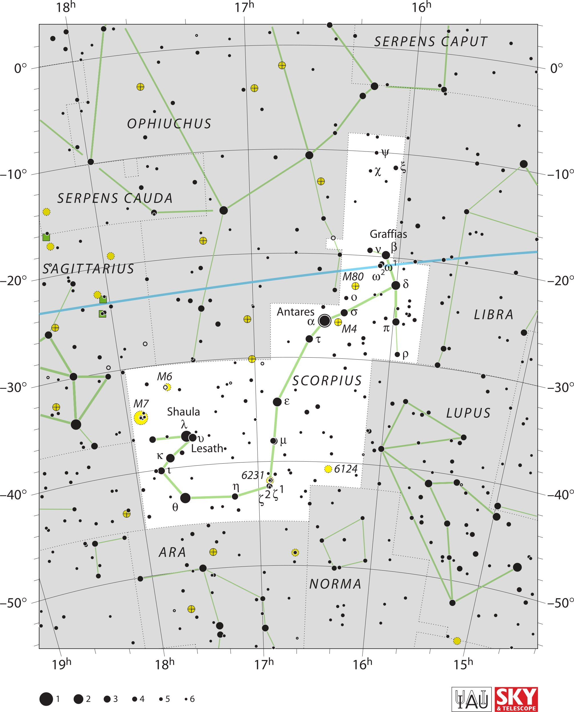

<div data-role="page" id="scorpius" data-theme="a">

	<div data-role="header">
		<a href="#home" data-icon="back" data-rel="back">Back</a>
		<h1>Scorpius</h1>
		<a href="#home" data-icon="home">Home</a>
	</div>

	<div data-role="content">
		<div class="cssImageMap">
			


			<a href="../messier/m80.html" class="messier" data-x="1200"
				data-y="940" data-width="100" , data-height="100"></a>

			<a href="../messier/m4.html" class="messier" data-x="1160"
				data-y="1100" data-width="100" , data-height="100"></a>

			<a href="../messier/m6.html" class="messier" data-x="540"
				data-y="1280" data-width="100" , data-height="100"></a>

			<a href="../messier/m7.html" class="messier" data-x="440"
				data-y="1390" data-width="120" , data-height="120"></a>


			<a href="ophiuchus.html" class="constellation" data-side="left"
				data-x="430" data-y="390" data-width="350" data-height="70"></a>

			<a href="serpensCauda.html" class="constellation" data-side="left"
				data-x="180" data-y="660" data-width="450" data-height="70"></a>

			<a href="sagittarius.html" class="constellation" data-side="left"
				data-x="140" data-y="900" data-width="350" data-height="70"></a>

			<a href="serpensCaput.html" class="constellation" data-side="right"
				data-x="1300" data-y="110" data-width="450" data-height="70"></a>

			<a href="libra.html" class="constellation" data-side="right"
				data-x="1650" data-y="1060" data-width="200" data-height="70"></a>

		</div>

		<div id="here">
			<h2>Scorpius</h2>

			<p>Image Credit: IAU and Sky & Telescope magazine (Roger Sinnott
				& Rick Fienberg)
		</div>
	</div>
</div>